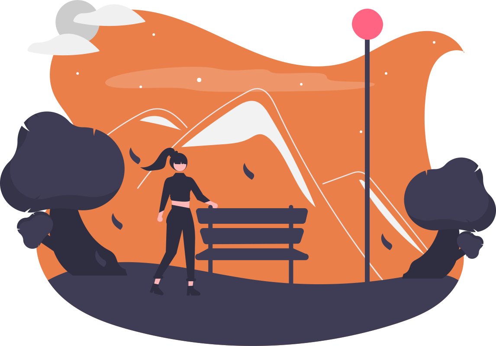

Hijau
dan
Bersih
bukan hanya sebuah
aspirasi
tetapi sebuah tindakan
Jenis Sampah
Organik
Mudah Terurai
Anorganik
Sulit Terurai
B3
Berbahaya
Aji Santoso
Professional Goggle Searcher | Frontend Newbie
OS : Linux
Text Editor : Visual Studio Code
Code : Html , CSS , Javascript
Github: Ajisnts